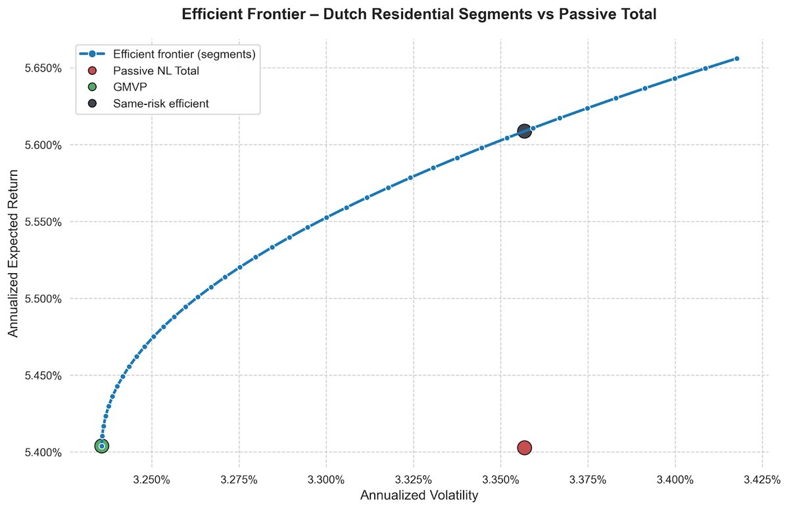
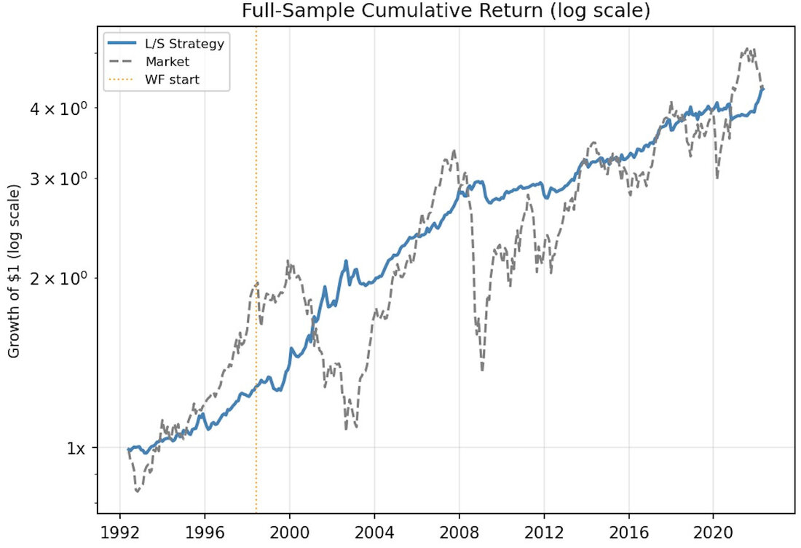
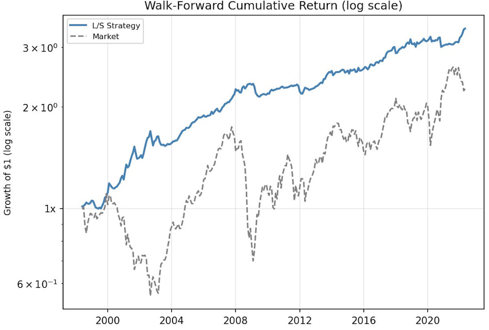
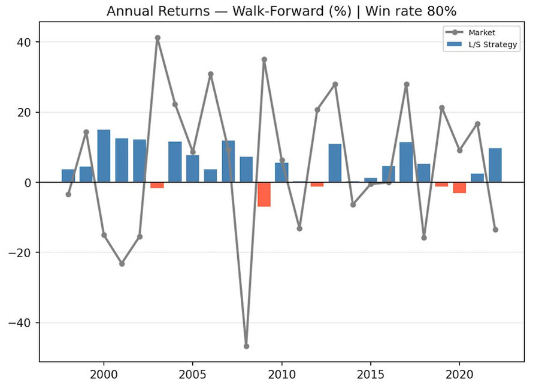
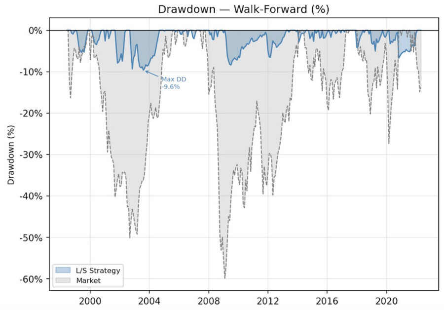
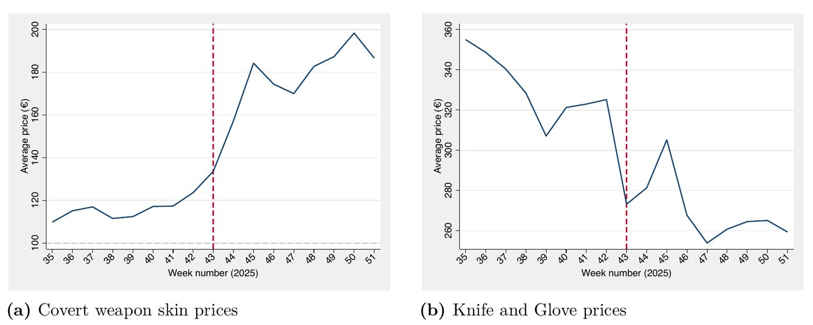

Welcome to my personal page. Here I present some of the projects I worked on during my studies. Feel free to scroll through my three group projects, a KPMG valuation case, and both my Bachelor's and Master's theses. Full methodology, the data, and what actually came out of it, project by project.
Scroll to explore ↓We built a mean-variance framework for a Dutch institutional investor choosing between residential housing segments (terraced, corner, semi-detached, detached, apartment) and the twelve provinces plus Amsterdam — then asked whether the standard Markowitz output actually survives contact with illiquidity, a real crisis, and flood risk.
The headline finding: the optimizer wants to concentrate in exactly the provinces most exposed to coastal flooding. That tension, not the optimization itself, is the interesting part.

A market-neutral long/short equity strategy combining Book-to-Market value and 11-month momentum signals, with two macro overlays — a regime tilt based on trailing HML performance, and continuous volatility scaling to a fixed target. Rebalanced monthly, self-financing, no net capital required.
We validated it out-of-sample using a 6-year rolling walk-forward analysis rather than trusting a single in-sample backtest — the whole point being to see whether the strategy would have actually worked if we'd built it a decade ago rather than reverse-engineered it now.




We re-ran Fama & French's (1996) 25 size/BE-ME portfolio sort and the Asness-Moskowitz-Pedersen (2013) value-momentum analysis on data through 2023 — nearly 30 years beyond the original studies — to see whether the classic results still hold, or whether they were an artifact of the sample period.
They mostly hold. The more interesting result is what happened to momentum during COVID-19, when the textbook prediction (a momentum crash) didn't materialise.
KPMG ran this as a standalone valuation case: build a full operating model for ASML from public disclosures, forecast it explicitly, and value it two independent ways. I modelled ASML's revenue bottom-up across its seven product lines — EUV, the three DUV lithography types, metrology, and installed-base service — before rolling everything into free cash flow and discounting it back at a CAPM-derived WACC.
The DCF and the trading-comps cross-check didn't agree, and reconciling that gap was the actual point of the exercise: the DCF leans heavily on a 1.3% perpetual growth assumption in the terminal value, while the semiconductor-equipment peer group's multiples had already compressed by the valuation date.
My Master's thesis asks whether Counter-Strike 2 weapon skins — a multi-billion-dollar market with no cash flows, no dividends, and a 15% transaction fee on every trade — behave like a normal asset class once you build a proper factor model for them. I constructed three Fama-French-style factors from scratch (a case-market factor, a rarity spread, and a liquidity spread) and estimated their risk prices with the Fama-MacBeth two-stage procedure, on more than 1.3 million skin-week observations.
The systematic-risk story turned out to be almost entirely absent — only the liquidity factor is priced, and the three factors together explain barely 2% of return variation. What actually drives skin performance is which item collection a skin belongs to: adding collection fixed effects to the characteristics-stage regression takes its R² from 3.5% to 84.6%.

My Bachelor's thesis, with two co-authors, tested Bitcoin's case as "digital gold" directly: does adding it to a traditional US portfolio actually help, and does that hold up separately in low- and high-inflation regimes? We built naive, minimum-variance, and maximum-Sharpe portfolios across equities, corporate bonds, and REITs — with and without Bitcoin — using ten years of weekly data split at the Fed's 2% inflation target.
Bitcoin improved every portfolio type in both regimes, and an equal-Sharpe-ratio test (Jobson-Korkie, Memmel-corrected) confirmed the improvement was statistically significant rather than a lucky sample. Three robustness checks — adding gold, swapping in Chinese assets, and swapping in other cryptocurrencies — mostly held up, with the interesting exception that Litecoin and Dogecoin actually out-diversified Bitcoin on its own.